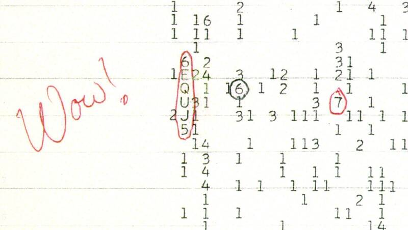

Wow! signal
Big Ear telescope, Delaware, Ohio, 1977

On August 15, 1977, Ohio State University's Big Ear radio telescope, then used to search for extraterrestrial intelligence, picked up a strong narrowband signal from the direction of Sagittarius. Astronomer Jerry Ehman circled the reading "6EQUJ5" on the printout and wrote "Wow!" beside it. The signal lasted the full 72-second window and has never recurred. Proposals such as comet hydrogen clouds have not been confirmed, and its single occurrence limits any alien interpretation. 1
Open in the interactive Watcher
Sources
- Wow! signal Wikipedia